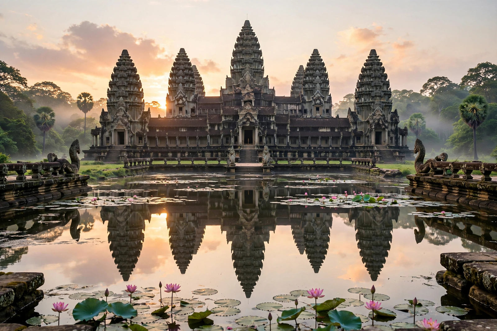

Angkor Wat is a Hindu-Buddhist temple complex in Cambodia, near Siem Reap, and the largest religious structure in the world, covering 162.6 hectares. Built in the early 12th century by Khmer king Suryavarman II, it appears on Cambodia's flag.

Angkor Wat broke with the Shaiva tradition, being dedicated to Vishnu. It served as capital city and state temple, likely also as Suryavarman's funerary temple. As the Khmer Empire adopted Theravada Buddhism, it gradually became a Buddhist site and was never fully abandoned.
The temple is surrounded by a 3.6 km outer wall and moat, has three concentric galleries rising to five towers representing Mount Meru, and extensive bas-reliefs depicting Hindu epics, heavens and hells, and the Churning of the Ocean of Milk.
A UNESCO World Heritage Site since 1992 as part of Angkor, it is Cambodia's top tourist attraction, managed with international conservation efforts.